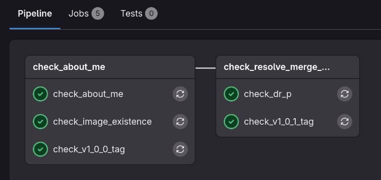

Git Fundamentals Lab
BME554L - Spring 2026 - Palmeri
Lab
Git Practice
This week we will go through a very simple git workflow to get you familiar with the process and to confirm that your toolchain works for future assignments.
Initial main Branch Development
- Make sure that you have git installed, ssh keys configured, and your Duke GitLab account is setup, as detailed here
- Be sure to review the tutorials outlined on the git setup page, as needed, to complete the tasks below.
- Create a fork–not a clone–of the git-fundamentals-lab in your userspace.
- Add Dr. Palmeri (
mlp6) as aMaintainerof your forked repository (Left Sidebar:Manage -> Members -> Invite members) - Clone your forked repository to your laptop using the URL available under the blue Code button:
Clone with SSH.
Warning
You want to clone your forked repository, not the parent repository you forked from!
Working on a Branch (Local)
- Switch to the
about_mebranch. - Edit
AboutMe.mdto replace all of theFILL_ME_INplaceholders with your own information. - Add and commit these text changes with a meaningful commit message.
- Add and commit a new image file named
fun_picture.pngin a directory calledimages/to complete that section of theAboutMe.mdfile. - Push this updated branch to the remote of your GitLab repository.
- Confirm that you can see your latest commit on this branch on the GitLab website.
Merge Request Time!
- Create a new Merge Request on the GitLab to merge the
about_mebranch into themainbranch.- Assign the Merge Request to yourself.
- You do not need a Reviewer.
- You do not want to squash or rebase your branch commits
- You do not want to delete the source branch.
- Check that the
check_imageandcheck_about_mepipline jobs have passed.Build -> Pipelines- Click on the latest pipeline (the colored rounded rectangle button in the status column).
- Click on the
check_imageorcheck_about_mejob to see the output of the test if itFailed.
- If the pipeline jobs for this branch have failed, you will need to fix the issue(s) and push the changes to your
about_mebranch.- If you are not sure what the issue is, click on the failed job to see the output of the test.
- If you are not sure how to fix it, ask for help!
- Once your CI jobs pass, approve your Merge Request on the GitLab website and
Mergeyourabout_mebranch intomain. - Checkout the
mainbranch on your laptop and pull the latest changes from the GitLab server. - Confirm that you can see the updated
AboutMe.mdfile in yourmainbranch, along with its associated commit in your git commit history.
Create an Annotated Tag
- On
main, create an annotated tag for this commit associated with your mergedabout_mebranch calledv1.0.0, with the message"include the about me info". - Push this annotated tag to the GitLab server (
origin). - Confirm that you can see your latest commit and tag on the GitLab website.
- You should see that the
check_v1_0_0_tagpipeline job has passed if this was successful.
Fix a Merge Conflict (Locally)
- Inspect the contents of
AboutDrPalmeri.mdinmain. - Switch to the
about_dr_pbranch, and look at the content (slightly different) ofAboutDrPalmeri.md. - Switch back to the
mainbranch, and merge theabout_dr_pbranch intomain.- You will be told that there is a
Merge Conflict:
$ git merge about_dr_p CONFLICT (content): Merge conflict in AboutDrPalmeri.md Automatic merge failed; fix conflicts and then commit the result.git statuswill show you the files that are in conflict, and what your next likely steps will be to resolve this conflict:
$ git status Your branch is up to date with 'origin/main'. You have unmerged paths. (fix conflicts and run "git commit") (use "git merge --abort" to abort the merge) Unmerged paths: (use "git add <file>..." to mark resolution) both modified: AboutDrPalmeri.md no changes added to commit (use "git add" and/or "git commit -a") - You will be told that there is a
- Staying on the
mainbranch, openAboutDrPalmeri.mdin your text editor, and inspect the<<<<<<<,=======, and>>>>>>>markers that indicate the conflicting lines. - Keep the version of the conflicting line that is in
main, and delete the line that was incoming fromabout_dr_p. - Be sure to delete the
<<<<<<<,=======, and>>>>>>>markers (lines). - Add and commit this merge conflict resolution.
- Create an annotated tag called
v1.0.1with the message"fix Dr. P's age". - Push your latest commits and tags to
mainon the GitLab server (origin). - All of your CI jobs should pass if everything was successful.
How to Ask for Help
- If you have a general / non-coding question, you should ask your TAs / Dr. Palmeri on Ed to allow any of them to respond in a timely manner.
- Push you code to your GitLab repository, ideally with your active development on a non-
mainbranch. - Create an Issue in your repository.
- Add as much detail as possible as to your problem, and add links to specific lines / section of code when possible.
- Assign the label “Bug” or “Question”, as appropriate.
- Be sure to specify what branch you are working on.
- Assign the Issue to one of the TAs.
- If your TA cannot solve your Issue, they can escalate the Issue to Dr. Palmeri.
- You will get a response to your Issue, and maybe a new branch of code will be pushed to help you with some example syntax that you can use
git diffto visualize.
What to Submit
Your fork of this GitLab repository will be running this CI script: .gitlab-ci.yml
- Go to the
Build -> Pipelinespage of your GitLab repository. - Take a screenshot of the latest pipeline that shows all of the tests passing, along with your repository information, as shown below (except all of those
Failedtests should reportPassed).

- Submit this screenshot to Gradescope assignment, along with completing the prompted questions.